library("ggenealogy")
library("dplyr")
library("readxl")
data("sbGeneal", package = "ggenealogy")
data("statGeneal", package = "ggenealogy")
statGenealEP <- statGeneal %>% filter(parent != "")
statIG <- dfToIG(statGenealEP)
uCP <- na.omit(c(statGeneal$child, statGeneal$parent))
uChild <- unique(na.omit(statGeneal$child))
uParent <- unique(na.omit(statGeneal$parent))
Specify sheet with a number or name
brGeneal <- read_excel("../geraldo/data/brGeneal.xlsx", sheet = "Sheet3")
sbIG <- dfToIG(sbGeneal)
getBasicStatistics(sbIG)## $isConnected
## [1] FALSE
##
## $numComponents
## [1] 11
##
## $avePathLength
## [1] 5.333746
##
## $graphDiameter
## [1] 13
##
## $numNodes
## [1] 230
##
## $numEdges
## [1] 340
##
## $logN
## [1] 5.438079
brIG <- dfToIG(brGeneal)
pathTN <- getPath("Tokyo", "Narow", sbIG, sbGeneal, "devYear")
plotPath(pathTN, sbGeneal, "devYear")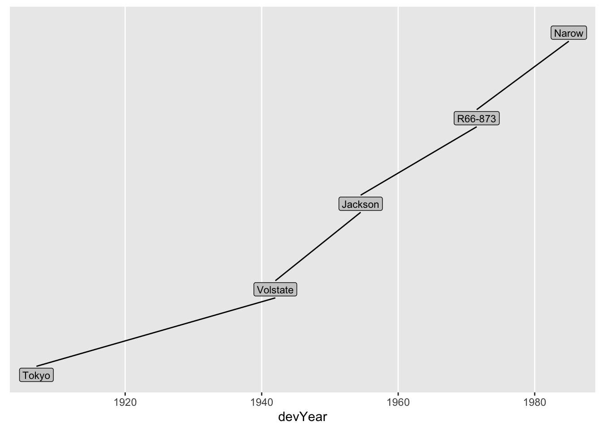
pathBZ <- getPath("Bedford", "Zane", sbIG, sbGeneal, "devYear")
plotPath(pathBZ, sbGeneal, "devYear", fontFace = 2) +
ggplot2::xlab("Development Year")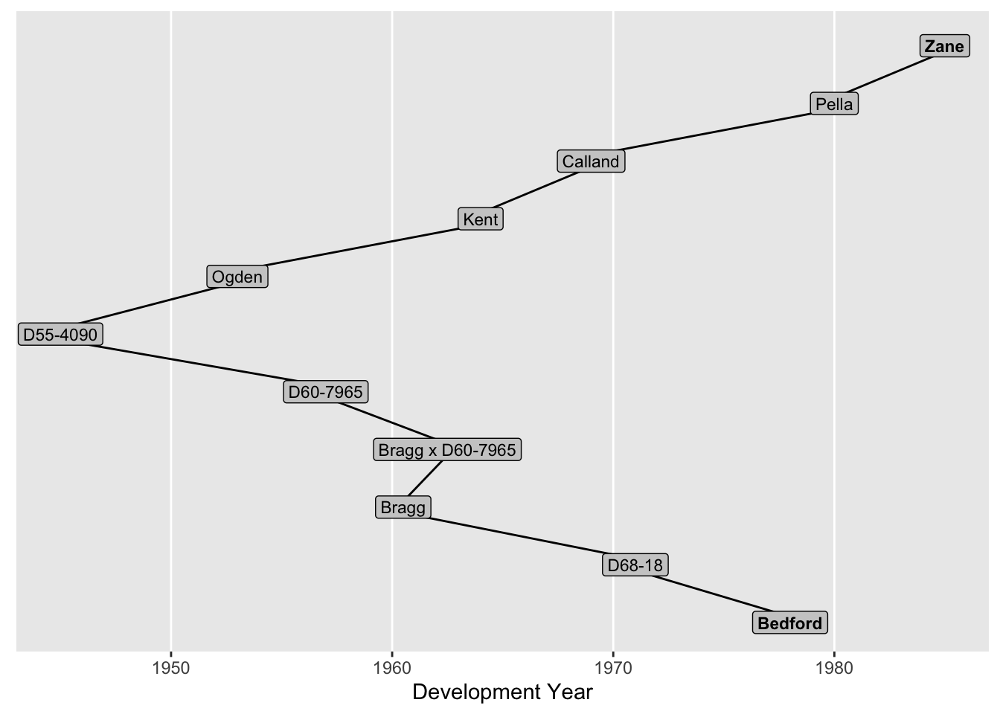
Descendents of the kings of Portugal from the first king, Afonso Henriques (Afonso I of Portugal), to Martim Afonso Chichorro, Governor of Chaves in Northern Portugual. We can use the official information of nobles in Portugal and Brazil to trace the ancestry of common Portuguese and Brazilian citizens and their families:
pathTN_BR <- getPath("Afonso I de Portugal",
#"Capitão André Rodrigues Chaves",
#"Francisco Dias d'Ávila",
"Martim Afonso Chichorro",
brIG, brGeneal, "devYear")
plotPath(pathTN_BR, brGeneal, "devYear")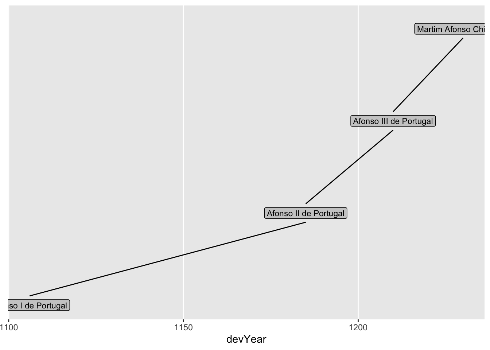
Now we plot the branch of Chaves immigrants to Brazil.
Below we see immigration from Chaves in Portugal to Brazil that originated families and the City of Dias D’Ávila in Bahia and Babuí (Minas Gerais):
pathTN_BR <- getPath("Garcia D'Ávila", "Maria Rita Chaves",
brIG, brGeneal, "devYear")
plotPath(pathTN_BR, sbGeneal, "devYear", fontFace = 2) + ggplot2::xlab("Year of Birth")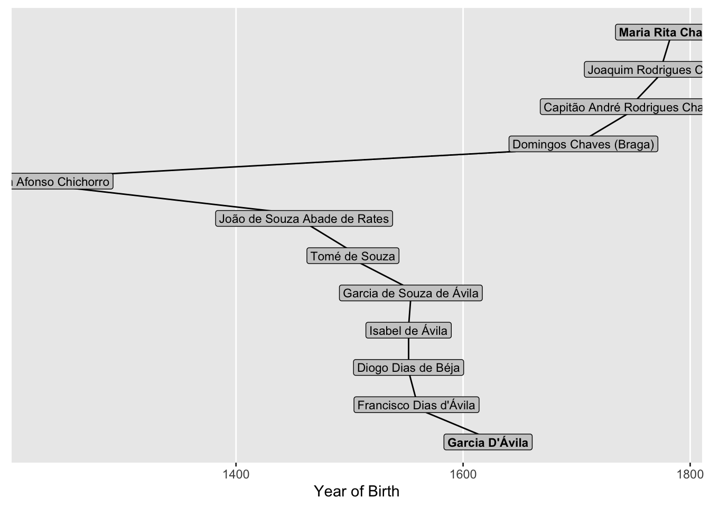
sbFilt <- sbGeneal[complete.cases(sbGeneal[1:3]), ]
sbFiltIG <- dfToIG(sbFilt)
pathCL <- getPath("Clark", "Lawrence", sbFiltIG, sbFilt, "yield")
plotPath(pathCL, sbFilt, "yield") + ggplot2::xlab("Yield")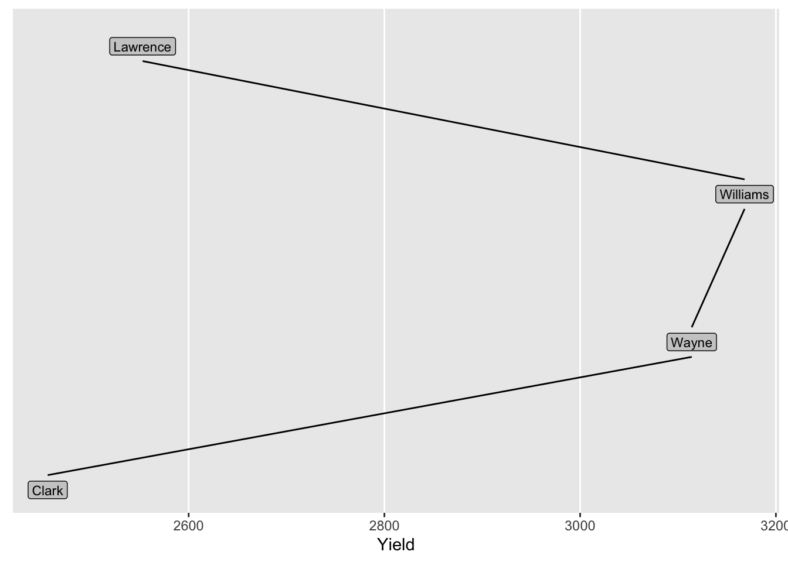
pathCL2 <- getPath("Clark", "Lawrence", sbFiltIG, sbFilt, "devYear")
plotPath(pathCL2, sbFilt, "devYear", "yield") +
ggplot2::xlab("Development Year") + ggplot2::ylab("Yield")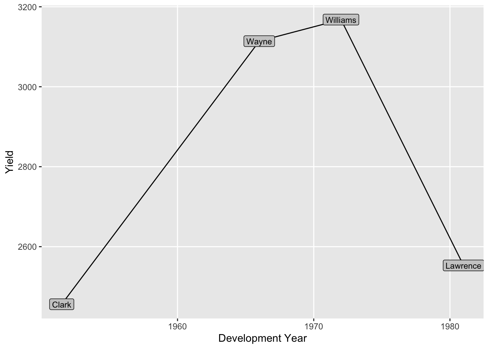
plotPathOnAll(pathTN, sbGeneal, sbIG, "devYear", bin = 3,
pathEdgeCol = "red",
nodeSize = 2.5,
pathNodeSize = 4) +
ggplot2::theme(axis.text = ggplot2::element_text(size = 12),
axis.title = ggplot2::element_text(size = 12))## Warning: Removed 1 row containing missing values
## or values outside the scale range
## (`geom_segment()`).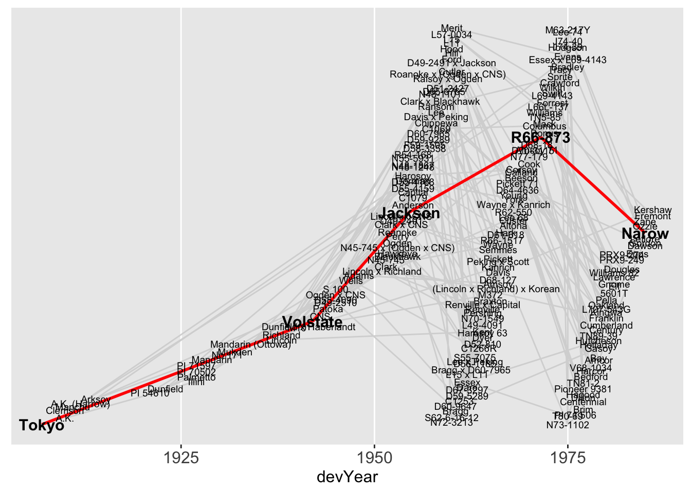
plotPathOnAll(pathTN_BR, brGeneal, brIG, "devYear",
pathEdgeCol = "red",
nodeSize = 2.5,
pathNodeSize = 4) +
ggplot2::theme(axis.text = ggplot2::element_text(size = 12),
axis.title = ggplot2::element_text(size = 12))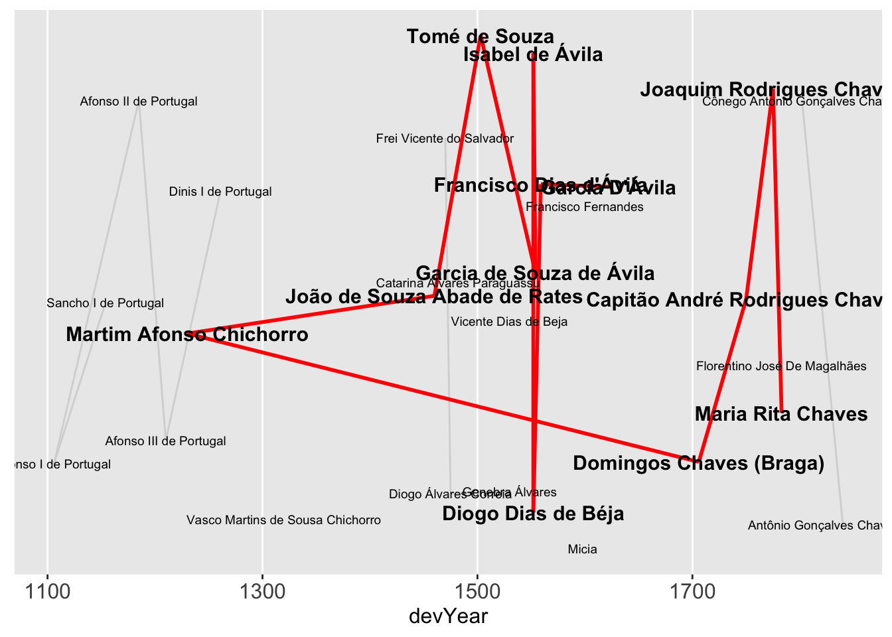
plotPathOnAll(pathTN, sbGeneal, sbIG, "devYear", bin = 6,
pathEdgeCol = "seagreen2",
nodeSize = 1, pathNodeSize = 3) +
ggplot2::xlab("Development Year")## Warning: Removed 1 row containing missing values
## or values outside the scale range
## (`geom_segment()`).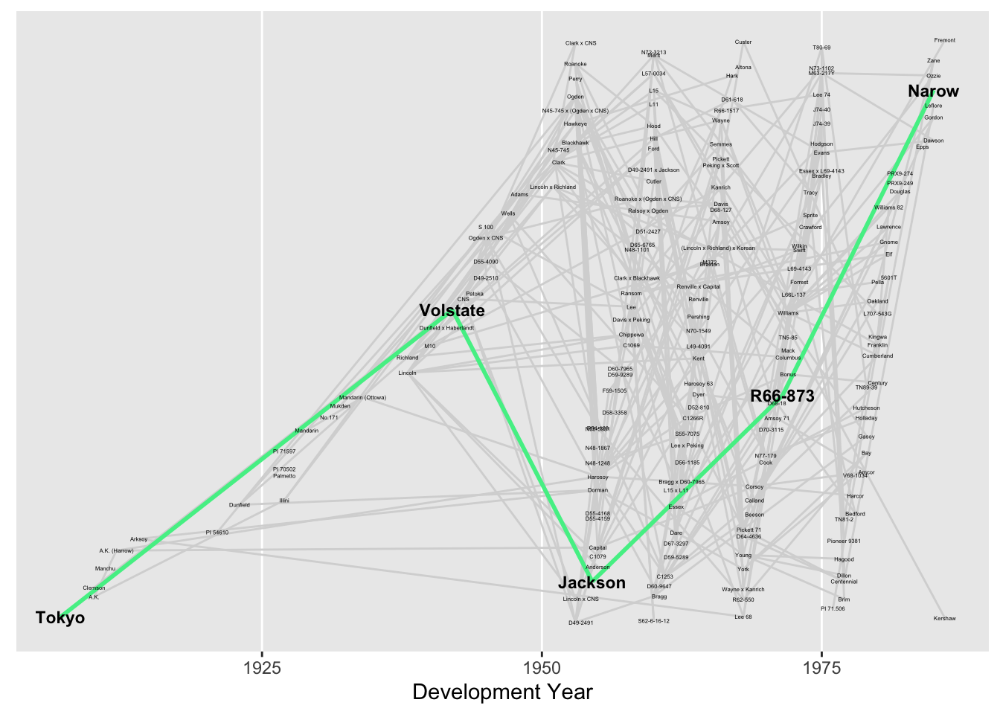
plotPathOnAll(pathCL, sbFilt, sbFiltIG, "yield", bin = 3, pathEdgeCol = "purple") + ggplot2::xlab("Yield")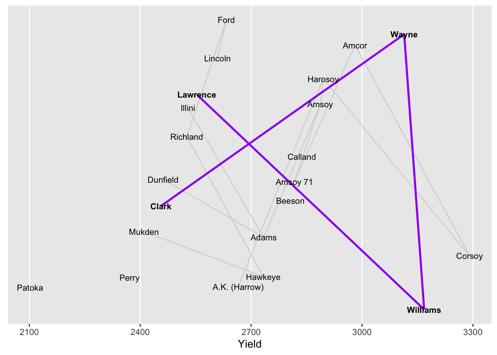
plotPathOnAll(pathCL, sbFilt, sbFiltIG, "yield", "devYear", pathEdgeCol = "orange") + ggplot2::xlab("Yield") + ggplot2::ylab("Development Year")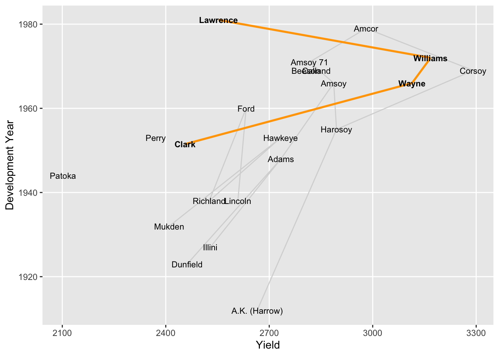
Starting with Martim Afonso Chichorro (ileg.)
brGeneal <- read_excel("../geraldo/data/brGeneal.xlsx", sheet = "Sheet8")
plotAncDes("Martim Afonso Chichorro (ileg.)", brGeneal, mAnc = 1, mDes = 7, vCol = "blue")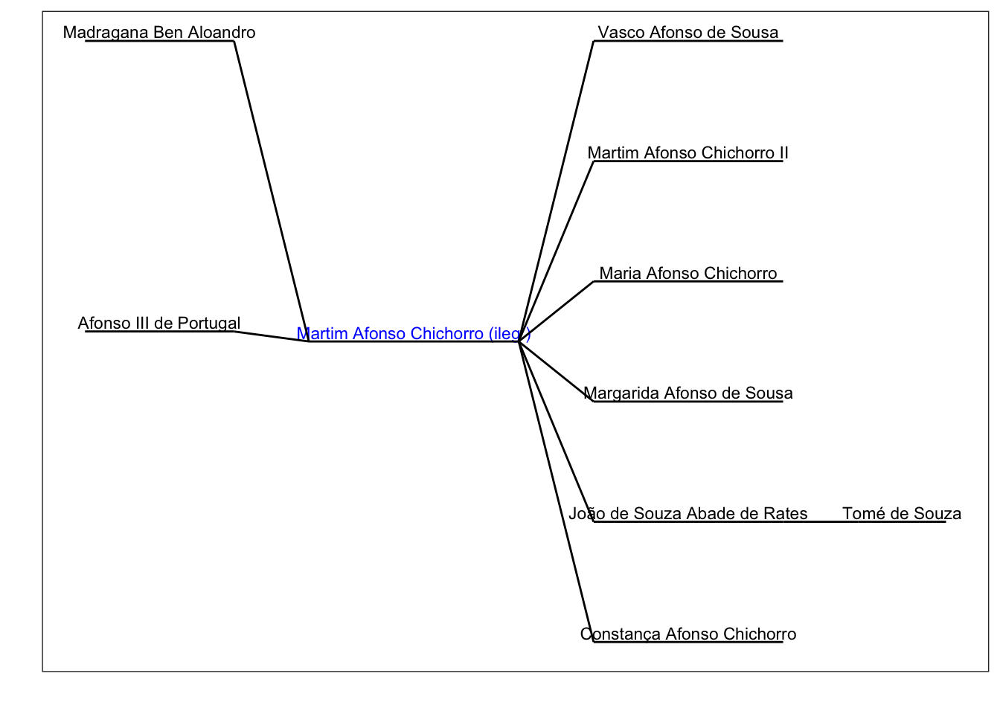
Starting with João de Souza Abade de Rates
brGeneal <- read_excel("../geraldo/data/brGeneal.xlsx", sheet = "Sheet9")## New names:
## • `` -> `...17`plotAncDes("João de Souza Abade de Rates", brGeneal, mAnc = 1, mDes = 4, vCol = "blue")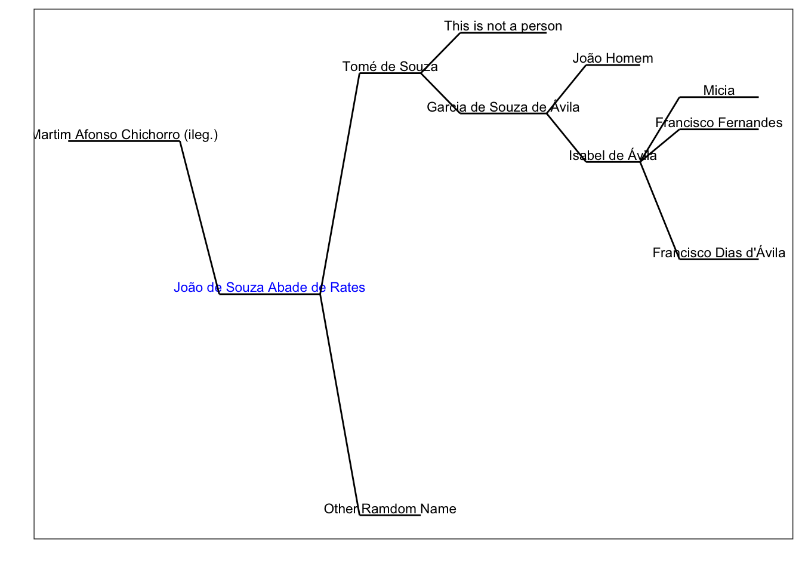
Starting with João de Souza Abade de Rates
brGeneal <- read_excel("../geraldo/data/brGeneal.xlsx", sheet = "Sheet9")## New names:
## • `` -> `...17`plotAncDes("Francisco Dias d'Ávila", brGeneal, mAnc = 3, mDes = 7, vCol = "blue")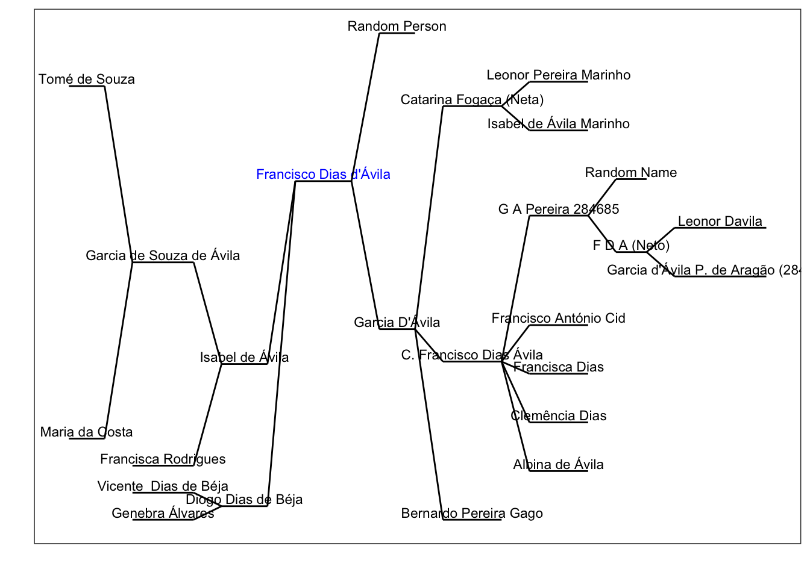
Starting with Tomé de Souza
brGeneal <- read_excel("../geraldo/data/brGeneal.xlsx", sheet = "Sheet9")## New names:
## • `` -> `...17`plotAncDes("Tomé de Souza", brGeneal, mAnc = 3, mDes = 7, vCol = "blue")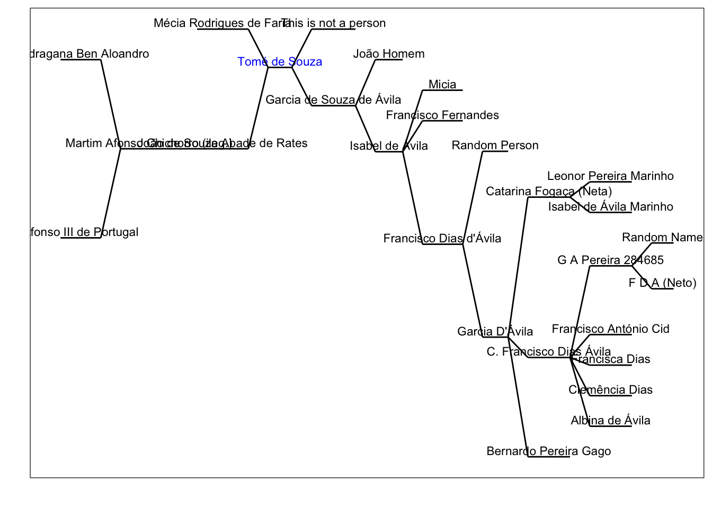
Starting with Gonçalo Vaz Coutinho
brGeneal <- read_excel("../geraldo/data/brGeneal.xlsx", sheet = "Sheet9")## New names:
## • `` -> `...17`plotAncDes("Gonçalo Vaz Coutinho", brGeneal, mAnc = 3, mDes = 7, vCol = "blue")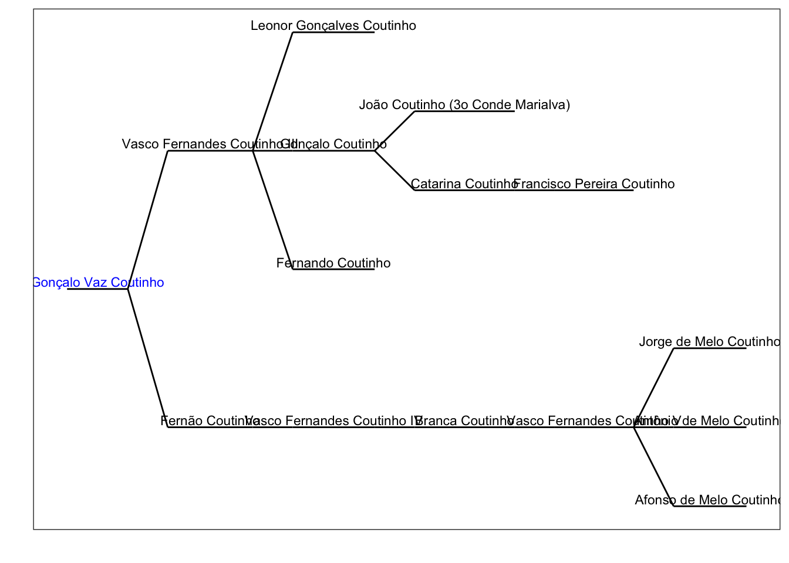